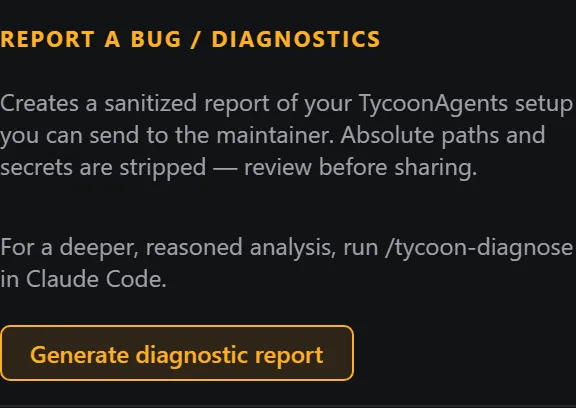
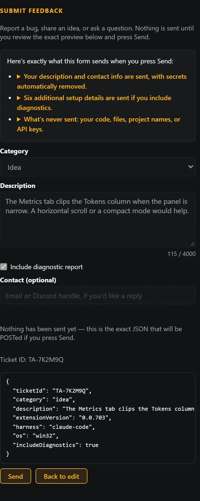

TycoonAgents Handbook / Chapter 14 / Part III · Reference
When something's not right
Most problems in TycoonAgents trace back to one of a handful of root causes — hooks, a missing theme selection, a stale bridge, or a metrics number that only looks wrong. This chapter is a quick-reference triage before you file a bug report.
The agent visualization is driven entirely by Claude Code hooks. If nothing appears, hooks likely aren't installed for this project, or your session hasn't picked up a recent install.
Open Settings → Hook health and use Troubleshoot & Fix to run Hook Doctor, which scans for issues and offers a Fix issues button for anything it can repair automatically.
Restart your Claude Code session so it picks up the newly installed or repaired hooks. If a finding persists after a fix, it may mean a previously-installed hook is still active in this session — a full IDE restart, then running Troubleshoot & Fix again, resolves it.
Advanced
The hook command TycoonAgents installs is an absolute path, not a relative one — because Claude Code launches the hook with whatever working directory an agent happens to be in, and agents often work in subfolders mid-session, a relative command would silently stop firing the moment an agent leaves the project root. On panel open, TycoonAgents auto-repairs a relative command it finds to its absolute form, taking a one-time backup of settings.local.json to settings.local.json.bak first (it never overwrites an existing backup from an earlier repair).
Two likely causes: no theme is currently selected, or the theme is selected but some of its entities are missing frames.
Note
Check the Theme Picker first to confirm a theme is active. If it is and art is still missing, see Chapter 8 for the health check and the Resume fix.
A gray UEFN chip means Power Tools isn't installed and wired into your .mcp.json yet, or UEFN hasn't been restarted since it was.
Confirm you've installed Power Tools yourself and copied its uefn-bridge entry into your own .mcp.json (Chapter 13).
Restart UEFN so it picks up Power Tools' bridge.
Advanced
Power Tools' bridge auto-discovers its own paths, but UEFN_BRIDGE_DIR (owned by Power Tools) overrides the IPC directory its bridge and MCP server use to talk to each other if it picks the wrong location. TycoonAgents' own pack instead reads UEFN_VERSE_PROJECT_DIR (Verse project cache root) and VERSE_LSP_PATH (the Verse language server executable) for its LSP/project checks. Reach for these only if the chip stays gray after a restart, or a check responds with the wrong project's data.
Advanced
verse-lsp.exe — the actual analyzer engine behind uefn_verse_check — ships inside Epic's own Verse VS Code extension rather than as a separate download. When VERSE_LSP_PATH isn't set, discovery searches for that extension across every supported IDE's extensions folder: VS Code, VS Code Insiders, Cursor, Antigravity, Windsurf, and a remote vscode-server install.
No VS Code-family IDE on this machine at all? You don't need to install one just for the analyzer: download Epic's Verse extension's .vsix directly from the VS Code Marketplace website, extract it (a .vsix is a zip archive), and point VERSE_LSP_PATH at the verse-lsp.exe inside the extracted folder.
Tip
The UEFN MCP chip also needs node v18+ on your PATH — the MCP client launches Power Tools' server through Node. Run node --version in a terminal to check.
Advanced
On Windows, a deep project path — especially one under a OneDrive-redirected folder — can exceed the 260-character MAX_PATH limit. When TycoonAgents detects this condition, it names it directly in the relevant error message rather than leaving you to guess. The fix is either to enable Windows long paths (the LongPathsEnabled registry policy) or to shorten or move the project path so it sits closer to the drive root.
A gap between "dispatched" and "completed" task counts is expected, not an error — it means some dispatched tasks never posted a completion (abandoned or simply unfinished), not that something is silently broken. See Chapter 11 for the full explanation.

Open Settings → Report a bug / Diagnostics and choose Generate diagnostic report.
The report is sanitized — absolute file paths and secrets are stripped before it's copied to your clipboard — and ready to paste wherever you're reporting the issue.
Tip
You can also run the /tycoon-diagnose skill directly from Claude Code for a deeper, AI-reasoned pass over your project's own configuration.
Tip
Asking Claude Code to investigate often helps. It can look inside your TycoonAgents setup in the project (the .claude/ hooks, agents, routing and activity files, and the diagnostics output) to work out what's going wrong. Try something like: "TycoonAgents isn't showing my agents on the stage. Please investigate the TycoonAgents setup in this project and tell me what's wrong before changing anything." When it finds the cause, please send it to us through Settings → Submit feedback (see § 14.6) so we can fix it if it's a real issue that affects more than one install.
Settings also has a Submit feedback form for anything short of a full bug report — an idea, a question, or a rough edge worth putting on record. It sits right below Report a bug / Diagnostics, and it's deliberately two-step: nothing is ever sent in the background, and nothing leaves your machine until you press Send.

Open Settings → Submit feedback, pick a category (Bug / Idea / Question / Other), and describe what happened (up to 4000 characters). Include diagnostic report is checked by default and attaches the same sanitized report from § 14.5; an optional contact field lets the maintainer follow up.
Choose Preview to see the exact JSON payload that will be sent. Only after you've reviewed it does Send appear — there's no way to submit without seeing the payload first.
What actually gets sent
Your description and contact info go as typed — local file paths and recognizable API keys or tokens are stripped automatically before anything is sent. If Include diagnostic report is checked, it also sends:
Never sent: your source code, file contents, project names (only redacted paths), API keys, or anything running in the background. Nothing leaves your machine until you press Send, and you'll see the exact data being sent right before that happens.
Tip
For a store or credit issue specifically (a failed purchase, a balance that looks wrong, a locked account), include your account ID from the Theme Builder header (it has its own copy button — see § 5.2) in the description field. The diagnostic report doesn't carry it automatically, and it's the fastest way for the maintainer to look up your account.
Tip
Submissions become tickets the maintainer triages directly — there's no account to create and no board to check. If sending fails (offline, timeout), the payload is copied to your clipboard automatically so nothing is lost, and you can retry or use the fallback form at feedback.corsairstudios.com.
Reinstalling through the setup wizard is safe to reach for. Your state survives an update — build progress and earned badges persist on the host side, not in the webview — so a reinstall won't wipe your progress.